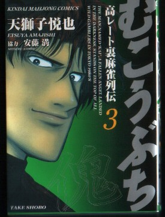
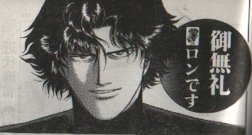

Book review 書壇。
（20）平成１３年コミック大賞
前千年紀、掉尾を飾るコミック大賞は「バード」であった。そして迎えた新千年紀、栄えある最初のコミック大賞に輝いたのは、近代麻雀で連載中のこの作品。

個人的に天獅子悦也の画風も好きだ。ストーリーも面白いが、それ以上にむこうぶちを有名にしているのは、このフレーズ。
そう云えば、数年前に能条純一の「哭きの竜」が大ヒットした。あれだけヒットしたのだから、このHPがず〜っと前にオープンしていたら「哭きの竜」もコミック大賞を受賞していたかもしれない（個人的には好きなストーリーではなかったけど....）。あの作品の「あんた、背中が煤けてるぜ」というフレーズも一世を風靡したな。
「ご無礼」というのは「失礼」と同義語。いうなら失礼よりちょっと古めかしい表現というところか。じっさいσ（-_-）の父なんか、ごく普通に使っていた。そんな影響なのか、σ（-_-）もときどき使っている（年のせいもあるかもしんない....）。
そこでアガったときに「ご無礼」なんていうのは、それこそご無礼な話だと思っているけど、この言葉自体には特にインパクトは感じていなかった。
そしたら先般、東京で妙齢の女性と話しているとき、その女性が「ご無礼って名古屋近辺の方言らしいですね」と云われたのでビックリした。もちろん方言といっても、名古屋地方特有という意味ではなく、古い表現がいまも残っているという意味だろう。よく地方へ行くと古い言い回しが残っていると云われるが、ご無礼もその傾向があるのかなと思った次第。